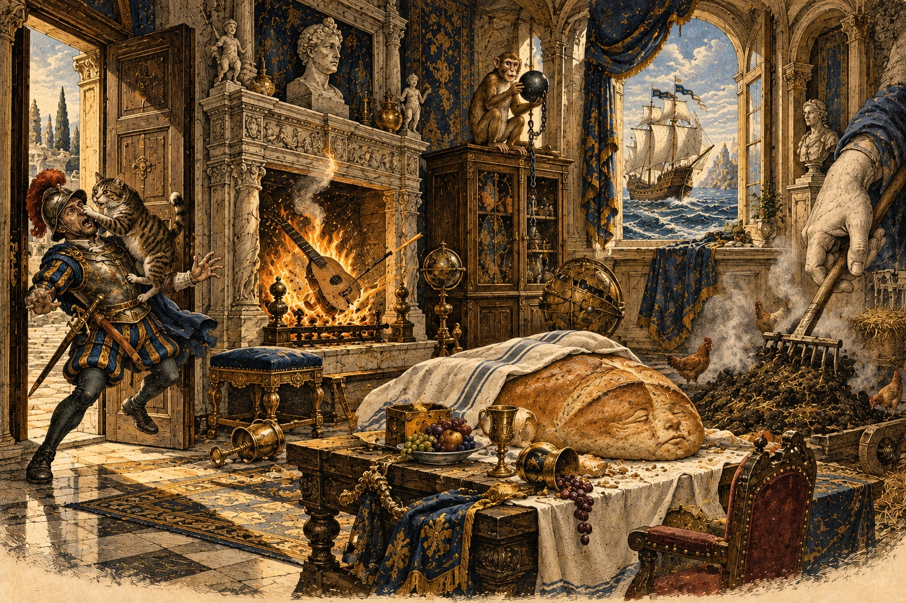

One busy morning, five jobs for your memory, and every tool you have so far. Choose the right one each time.

← Drawing Your Thinking · The whole course · Words in a New Language →
Ines runs a stall at the Saturday market of a small town. This week, she is also in charge of the market's opening ceremony, because the person who usually does it has fallen ill. At six in the morning she stands in the empty square with a head full of things to do and no time to write them down.
There are twelve stalls and each of them needs something. There are the names of the three people from the town council who will arrive early. There is the stall number for the mayor's table, which is 27. There is the price of the cheese, 3.40, that she must tell her helper. And at eleven there is a two-minute welcome speech that she will have to give without notes, because her hands will be full of flowers.
In the old days she would have panicked. This time she does something calm. She walks slowly down the middle of the square and decides, for each job, which tool fits.
The shopping list is only six things, and she needs it quickly: a story chain. The stall number and the price are digits: she turns 27 and 340 into two quick scenes. The three names are for the council members' faces, as they come in, so she will use a name picture on each feature. And the speech is a talk: five points, five places along the market's central avenue, from the fountain to the church.
By nine, the work is done and the market is open. The council members arrive and she greets each of them by name. The mayor gets table 27. The helper hears the price and writes nothing. At eleven she walks down the avenue in her head, from picture to picture, and speaks to the crowd with her hands full of flowers.
Nobody notices that she used any method at all. That is the best sign it is working. This lesson is your own Saturday market. It asks you to do five small jobs, in a mixed order, using what you learned in the first three parts. And it ends with five habits that keep it all alive.
Say what you think each one means, then open it.
Valdera and Ines are invented for this lesson.
You now have a toolkit. This lesson is about choosing, and about the five habits that make every tool work better.
| The job | The tool | Lesson |
|---|---|---|
| Ten or fewer things, in order, right now | Body pegs or a story chain | 3, 5 |
| A list of many items, to keep | A memory palace | 4 |
| A short number or a year | Shape, rhyme or Major System | 6, 7 |
| A long number | Dominic or PAO | 8, 9 |
| A name | Name picture + feature | 11 |
| A pack of cards | Fixed card pictures along a route | 12 |
| A talk | Five pictures in five places | 13 |
| A subject with branches | Mind map, then a palace | 14 |
Have a go before you open any answer. A rough attempt teaches you more than a perfect model you only read.
Say the answer first, then tap the card.
Eight things from Ines's morning: three names, a stall number, a price and three goods. Type them back in any order.
Choose the right tool for each: name pictures for the three, major words for the two numbers, a chain for the goods.
The list has gone. Type what you remember, one item per line.
These reach back to earlier rooms. Answer in your head or out loud, then check.
Which of the five habits do you most often skip? What small change would fix it?